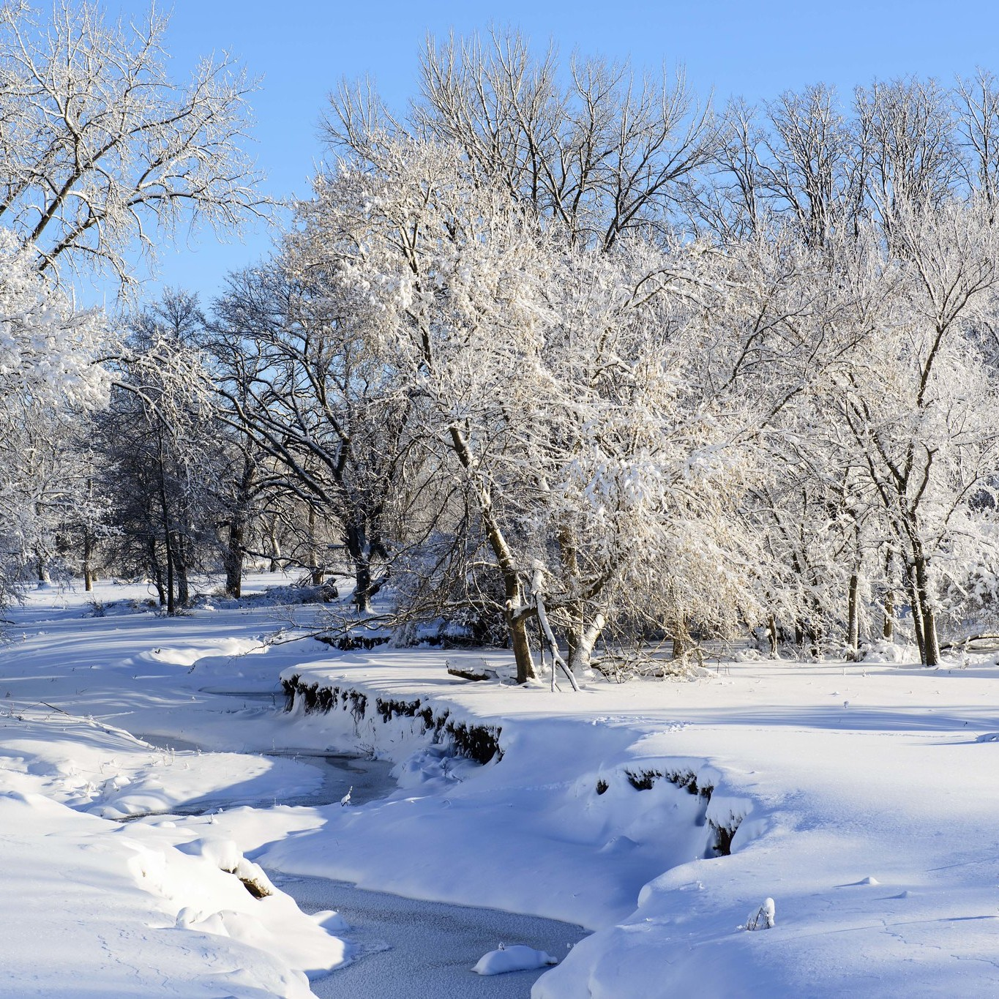
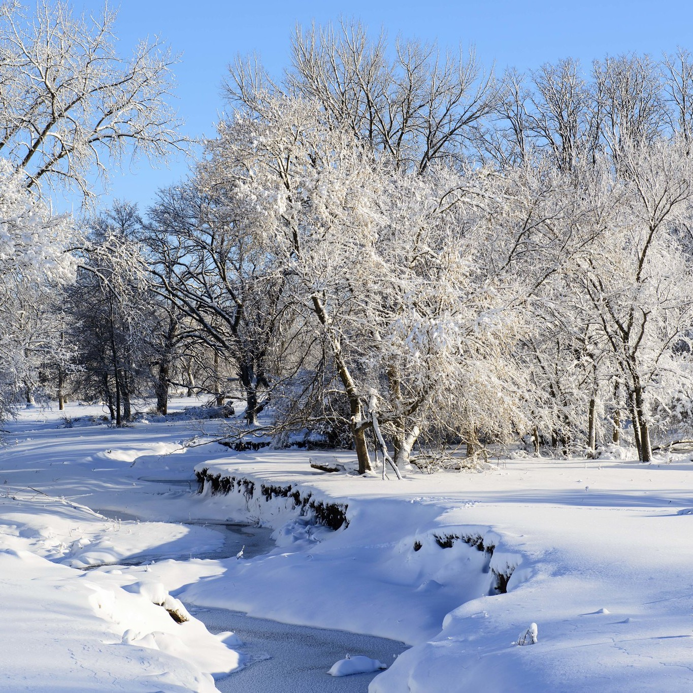

Bok još jednom! Kao što već znate, moje ime je Sara Barbarić, imam skoro 19 godina i idem na Grafički fakultet, trenutačno sam prva godina, brucoš. Odrasla sam u Zagrebu, ali moji roditelji su iz Hercegovine, tako da tamo također provodim dosta vremena, skoro sve praznike! Išla sam u glazbenu školu pet godina, svirala klavir, i trenirala sam ples 4 godine. Trenutačno ne idem nigdje na satove, ali imam razne hobije. U slobodno vrijeme učim kineski, obožavam recitirati pjesme na kineskom, pećem kolače za svoju obitelj i prijatelje, te često izvodim stand-up komediju u jednom kavrtovskom kafiću. Glazba me pratila kroz cijeli život i nije me napustila niti u većim godinama. I dalje često sviram klavir, pišem skladbe i pjesme. Obožavam slušati glazbu i rijetko gdje idem bez svojih slušalica. Neki od najdražih izvođača su mi Jala Brat, Buba Corelli, Phillipe Jarousky, Antonin Dvorak i BROCKHAMPTON. Još neke stvari koje volim su: zima, i općenito sve što ima veze sa zimom, paprike, posebno crvene, i čips, slani. Neke stvari koje mrzim su: čips od paprike, paradajz i žlice.
 
